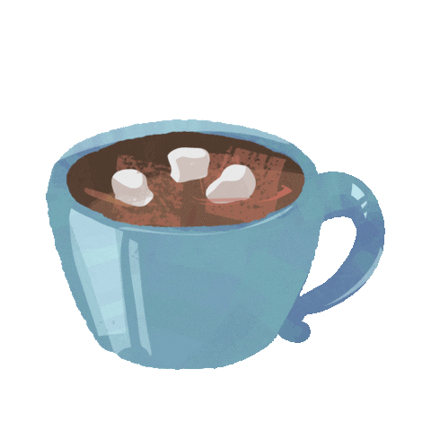

You head back home, get out of your car and head back inside.
You grab your blanket and go to sit down to watch a movie.
The doorbell rings so you go to get it.
A package is delivered to you, it's the mug you ordered.
You're so happy it arrived so soon since
your other one broke a few days ago.
You sit down and watch a movie, wrapped in your
blanket with a cup of hot chocolate.
You think, well... It was a normal day, at least you
went out for a bit, and you're pretty satisfied with that.
